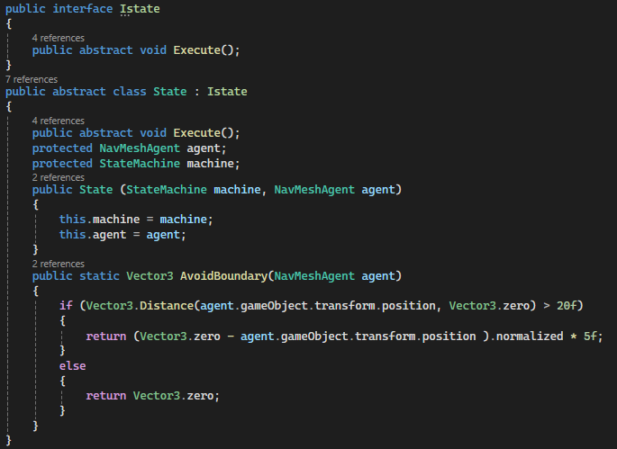
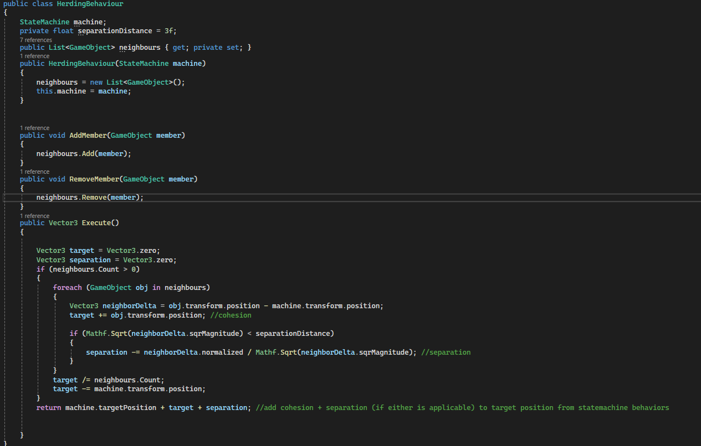

C#
This project is my first attempt at using the state machine pattern. I decided to implement this by creating a herding mechanic for a "sheep" object, that simultaneously implements both fleeing and roaming behaviours, controlled by a state machine.
This work was a solo project, however I still aimed to keep my code modular, and continued to implement good programming practices, including interfaces and abstract classes.
This work was completed as part of my second-year gameplay programming module. A demo of this project can be found here.
Building a state machine was my first attempt at using abstract classes and enforcing good programming techniques, such as the use of Interfaces for easier class implementation.
I could also implement a method for avoiding the boundaries of the arena, that would be applied before each movement call as I often had issues with my sheep being stuck at the walls during testing.
Each of my states would then be implemented as new classes, that would inherit from my state abstract class. I could then switch between states and the required methods within my State Machine script.
Implementing the herding behaviour was initially more challenging as I needed it to apply simultaneously with the fleeing and roaming states.
Eventually, I figured out a solution that had the Herding behaviour apply as an offset to the agent's target position, which would be added just before the movement was applied.